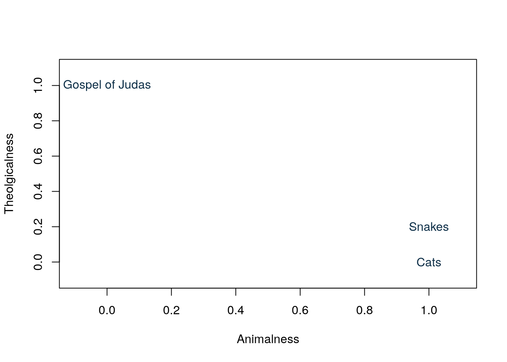

Using Semantic Search for Dungeons and Dragons
The task ahead of us
As a long time Dungeon Master, one thing I often face when introducing new players to Dungeons and Dragons is the overwhelming amount of rules involving magic. If you don’t know, every spell has quite a few specifics to it and you cannot just declare that you throw fire at your enemies. There are dice involved, measurements, sometimes material, verbal or somatic components… it is a lot… but as a new player, you often really just want to throw fire at goblins or make plants grow real fast… So I came up with an idea: What if you could just type what you want to do and my program looked up the relevant rules for you?
To do this, the question really becomes how to associate the meaning of the user input text with the meaning of what the rules say. And to answer that, we have to talk about semantic search.
What is semantic search?
In plain English, semantic search just means searching via meaning. So how do we do that? Well first, we have to talk about how we even express meaning in a mathematical way. As humans, we understand that the meanings of ‘cats’ and ‘snakes’ are more similar to each other then the meanings of ‘cats’ and the ‘Gospel of Judas’. If a kid asked me the usual Why? question, I would say something along the lines of “Well, cats and snakes are both animals, while the Gospel of Judas is a theological text.” They would probably ask me what theological means, but that is beside the point. The relevant question for us is how can we express my answer mathematically?
We can imagine a 2d plane with the axes \(x\) and \(y\). We can say that the animalness of a concept is on the \(x\) axis while the theolgicalness lies on the \(y\) axis. So for the purpose of our example, we will place 3 concepts on this plane: Cats will go on [1,0], high on the animal axis, because, well, cats are animals and low on the theological axis because they are not really relevant for theology (I know they don’t exactly have 0 relation, but let’s keep this simple for the sake of the example.) Snakes can go at [1,0.2], because they are still very much animals, but they are a bit more connected to theology then cats. Finally, the Gospel of Judas can go to [0, 1] as it is a theological text and not an animal.
Just looking at this graph, we can see it very easily. Snakes and Cats are close to each other and both are far from the Gospel of Judas. However, Snakes are closer to the Gospel then Cats. We could even take a ruler and see the exact distances between the concepts. That is, we have just created a semantic space where concepts can be placed and the relations between their meaning become numerically measurable. In practice, we call this form of representation an Embedding Space.
Embeddings
When talking about modern AI, we often hear about tokens. You probably know that any text you feed into a large language model gets segmented into pieces which are essentially words, but not exactly. However, the reason behind this segmentation is often omitted. So, what is the deal? In short, without going too deep into how these models work on the inside (perhaps in another blog post), if we want the model to understand what we want it to do, we need to feed it meaning, not just combinations of letters. And we have already seen how meaning can be expressed mathematically.
Of course, in the real world, we wouldn’t exactly place ‘Animalness’ on the \(x\) axis, ‘Theologicalness’ on the \(y\) axis and call it a day. Real embeddings are still vectors just as the [1,0] we described before, however, they are slightly larger, as in, there are more axes. While we as humans struggle to visualise anything that has more then 3 dimensions, mathematically it is very easy to add dimensions, look: [1,0,99] This 3 dimensional vector now has one more axis, which corresponds to… I don’t know, willingness to scratch furniture. And look [1,0,99,0], a fourth dimension, this one represents the friendliness… I can keep adding them like that as long as I want to… which is sort of what happens in Natural Language Processing. The vectors we associate with each token often have thousands of dimensions and every direction in this space represents some meaning. So we end up with this high-dimensional space where concepts are placed.
Distance expression
So how do we express the distance between concepts, if there are so many dimensions we cannot visualise it? It was easy when we could use a ruler, but it gets slightly more complicated if we have to account for thousands of dimensions, right? Actually, not really. If instead of a ruler, we use maths, it is just as easy as adding more dimensions to the vector. The formula that corresponds to what a ruler would do is what we call Euclidian distance and it looks like this in 2D:
\[ d(x, y) = \sqrt{(x_1 - x_2)^2 + (y_1 - y_2)^2} \]
If we want to take it to 3D, all we have to do is account for the distance on the newly added \(z\) axis:
\[ d(x, y, z) = \sqrt{(x_1 - x_2)^2 + (y_1 - y_2)^2 + (z_1 - z_2)^2} \] I think you can already see the pattern. For every new dimension, we just need to sum the squared difference on the newly added axis, so the actual formula for a space with \(n\) dimensions becomes:
\[ d(p, q) = \sqrt{\sum_{i=1}^{n} (p_i - q_i)^2} \]
And just like that, we can find the distance between any two concepts in our way-too-many dimensional space. In practice there are also other formulas for expressing how closely related two vectors are, such as Cosine Similarity which is what my code actually uses, but conceptually, the idea is not that different. Find out how related 2 mathematical expressions of meaning are.
Putting it all together
So, how do we use all of this to find the relevant DnD spells?
For this purpose, we are going to use something called a Sentence Encoder, which is just a model that takes the text, segments it into tokens (each with an embedding) and then returns a single embedding corresponding to the overall meaning of the whole sequence. We are then going to find the vector that represents each of the spell descriptions in the rulebook and place all of them in a multi-dimensional space, just like the ones we discussed above. Then, once the user describes what they want to do, we will also find the vector representation for the input and place it in the same space. All we have left to do is to find the relation between the input vector and each of the spell description vectors and output the most closely related spells.
If you want to see the full program in action and play around with it, you can find it in the free tools section. Just beware, the server I am hosting it on is a bit slow and it may take a moment to load.
If you want to read through the source code, you can find all of it in the GitHub Repository.
If you would like to learn more about how sentence encoders (and other types of Large Language Models) update the meanings of individual tokens based on their context, check out my guide on Understanding Multi-Headed Self-Attention.